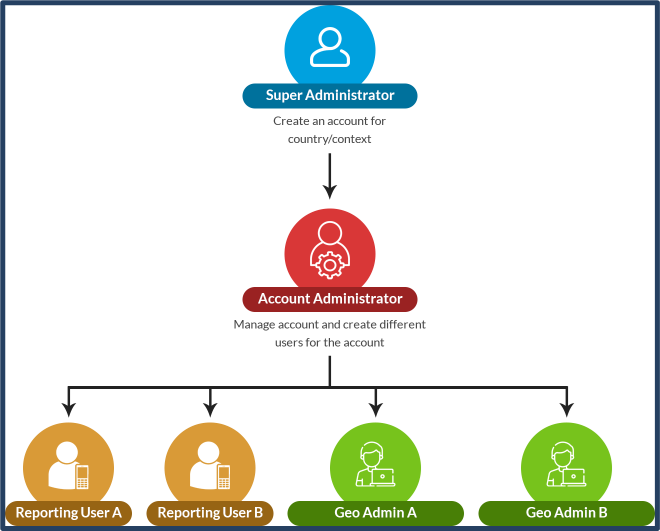
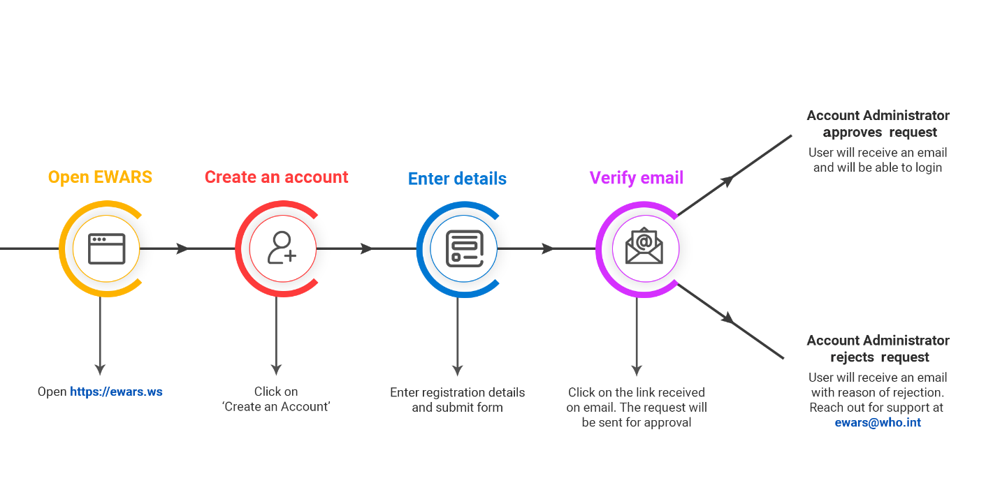
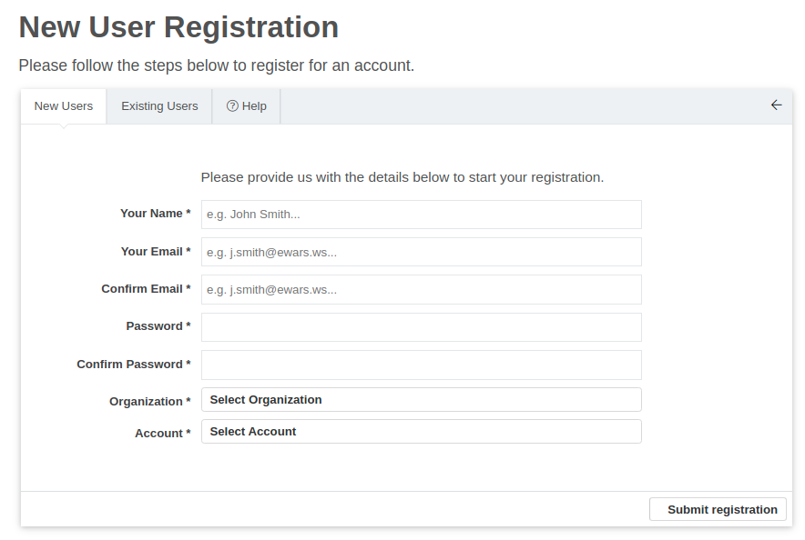
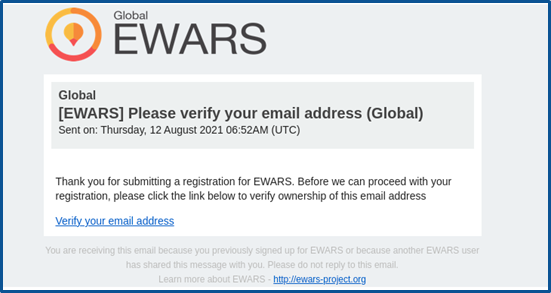
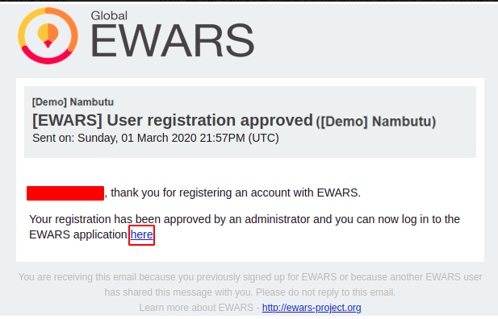
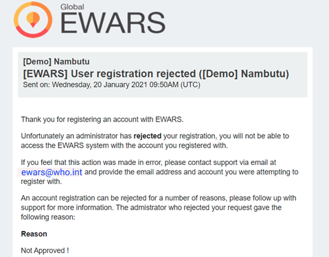
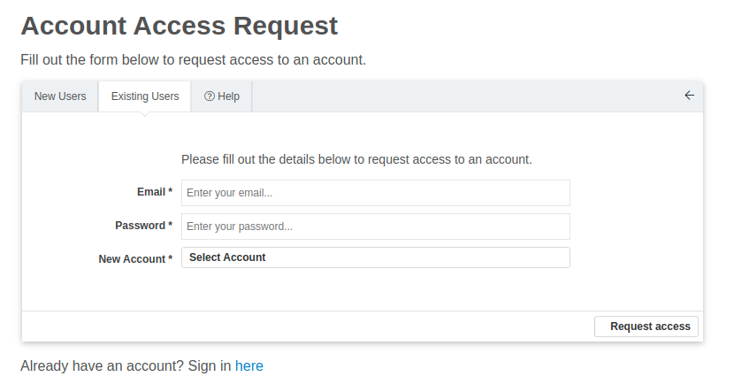
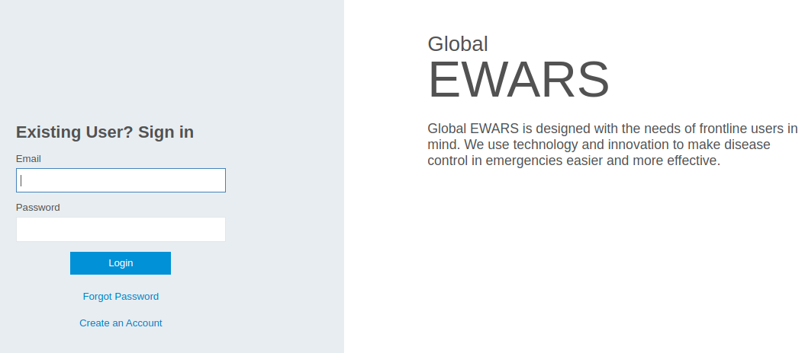
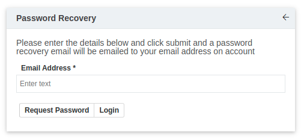
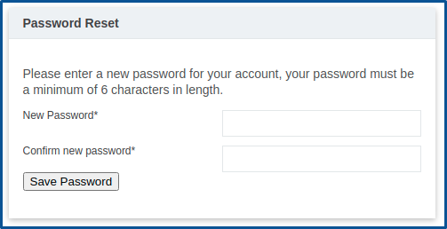

Chapter 2. Getting started
This Early Warning, Alert and Response System (EWARS) web user guide is intended to assist an Account Administrator or a Geographical Administrator. Reporting Users can refer to the mobile user guide. If you are not an Account Administrator or a Geographical Administrator, this guide may not be useful for you.
This chapter will help you to register for and access the EWARS account for your context. It goes into detail on topics including user registration, the authentication process (logging in and out), retrieving forgotten credentials and requesting access to accounts in a different country or context. This is designed to help users set up their accounts easily and optimize the powerful EWARS technology to make disease detection and control in emergencies more effective.
 Note: EWARS Country account creation is done in negotiation with the EWARS core team and the Super Administrator. As an Account Administrator you need to register a user account in the newly created EWARS Country account. Note: EWARS Country account creation is done in negotiation with the EWARS core team and the Super Administrator. As an Account Administrator you need to register a user account in the newly created EWARS Country account. |
2.1 Registering as a new user
The first step to get started is to create an EWARS account for your context/country. EWARS account creation is done centrally by the EWARS Super Administrator.
Once an EWARS account is created and an Account Administrator assigned, each subsequent user has to request approval from the Account Administrator for registration (Fig. 2.1).

Fig. 2.1. The user registration system| Note: the following sections assume that you already have an EWARS Country account for your context. |
The registration process is depicted in Fig. 2.2 and the steps are set out in detail below.
Fig. 2.2. The EWARS registration process

- Open https://www.ewars.ws on an internet browser.
| Note: use Google Chrome for best performance. The link can also be accessed using Mozilla Firefox or Microsoft Edge. |
- Click on Create an Account. The following registration page appears:

- Populate the following mandatory details.
Your Name: enter your name.
Your Email: enter your email address. This will be used for verification of your EWARS account.
Confirm Email: re-enter the email address for confirmation.
Password: enter the password for your account.
Confirm Password: re-enter the password for confirmation.
Organization: select the organization that you belong to.
Account: select the EWARS account you wish to register for.
- Click on Submit registration. A verification email will be sent to the email address you have registered with:

- Click on Verify your email address. A request will be sent for approval.
Note: A Super Administrator will create the EWARS Country account and then create one Account Administrator who can give approval to subsequent Account Administrators and Geographical Administrators. —————————————————————————————————————————————————-
The approval will be granted by the Account Administrator of the requested EWARS account. The Account Administrator can either approve or reject a request. You will receive an email confirming approval or rejection of your registration request, as applicable.
If the request is approved, you will receive an email, as shown below:

If the request is rejected, you will receive an email with the reason for rejection:

To follow up on the reason for rejection, please contact support via email at ewars@who.int.
2.2 Requesting access for another account
If you have already registered in the system but would like to access other accounts – for example, for a different country or context – it can be done as follows.
- Open https://www.ewars.ws on an internet browser. Click on Create an Account. Click on the Existing Users tab. The following screen appears:

- Populate the following mandatory details.
Email: enter your registered email address.
Password: enter the registered password of your account.
New Account: select the new EWARS Country account you want to access.
- Click on Request access. Your request is sent for approval, and you will receive an appropriate email with the outcome.
Note: you can request access to another account only if you are an existing user and you want to access multiple accounts – for example, if you have a regional EWARS role and are responsible for multiple countries or contexts. —————————————————————————————————————————————————-
2.3 Logging into EWARS
To log into your EWARS account, follow the steps below.
- Open https://www.ewars.ws on an internet browser. The login page appears, as shown below:

- Enter the Email linked to your EWARS account. Enter the Password of your account. Click on Login.
2.4 Recovering a forgotten password
If you forget your password, EWARS facilitates setting a new password for your account, using the forgot password feature.
Note: this feature is only available for users whose accounts have been created with valid personal email addresses. Users with a system-generated email address – an email address ending in “@ewars.ws” –need to contact the Account Administrator to reset a password. —————————————————————————————————————————————————-
To recover your password, follow the steps below.
- Open https://www.ewars.ws on an internet browser. Click on Forgot Password on the login page. The following screen appears:

Note: if the email provided by the user does not exist in the system, the system notifies the user with the message “No account associated with this address”. —————————————————————————————————————————————————-
- Enter the email address of your account. Click on Request Password. An email will be sent to your registered email address. Click on the Password Reset link in the email. The following screen appears:

Enter a New Password for your account (minimum six characters). Re-enter the password in the Confirm new password field. Click on Save Password. Your password has now been changed successfully.
To log out of EWARS, click on the logout icon at the top right-hand corner of the screen. You will be logged out of EWARS and redirected to the login screen, where the new password can now be used to access the system.
2.5 Configuring a new EWARS account
Following successful registration, as an Account Administrator or Geographical Administrator, you are required to manage configurations of the new EWARS account in accordance with the country or context.
Configuration of the new account includes several key areas, including adding locations for your country/context, followed by adding indicators, forms, alarms, users and so on. You can use the standard templates provided by EWARS to create forms, dashboards, document templates and websites. Standard templates are available in the Model account, which can be transferred easily and modified to your context. If not, you have the freedom to create new formats according to your needs.
The following chapters of this guide explain these features in greater detail.